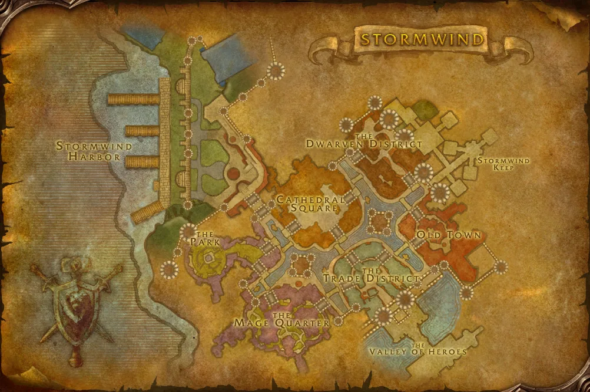

Übersicht
Level24–32
GebietStormwind
KategorieAllianzgebiet
TypClassic
Eingang: Canal District / Stockade. Die Gebietskarte findest du im Reiter „Gebietskarte“.
Bosse & Loot
Icons: bekannte Item-IDs nutzen Original-Wowhead-Icons; übrige Einträge bekommen mindestens ein passendes Slot-/Waffenicon statt eines kaputten Bildes.
Bruegal Ironknuckle (Rare)
3 bekannte Loot-Einträge
Dungeonquests
Quelle: Wowhead Forever „Every Dungeon Quest“, aktualisiert 31.10.2026. Beta-Dungeons können noch unvollständig sein.
Allianzquests
Quell the Uprising · Level 22Start: Stormwind – Warden Thelwater /way 41 58
The Color of Blood · Level 22Start: Stormwind Old Town – Nikova Raskol
Crime and Punishment · Level 22Start: Darkshire – Councilman Millstipe
What Comes Around... · Level 22Start: Lakeshire – Guard Berton
The Fury Runs Deep · Level 25Start: Wetlands – Motley GarmasonThe Dark Iron War vorher
The Stockade Riots · Level 16Start: Stormwind – Warden ThelwaterStarts from The Unsent Letter
Hordequests
Keine fraktionsspezifischen Quests in der lokalen Liste. Siehe Wowhead-Quelle unten.
Neutral / Klasse
Keine fraktionsspezifischen Quests in der lokalen Liste. Siehe Wowhead-Quelle unten.
Stormwind – Dungeon-Eingang

Marker: Canal District / Stockade
Die Karte zeigt das komplette Gebiet, nicht mehr nur eine schematische Platzhalterfläche.
Die Karte zeigt das komplette Gebiet, nicht mehr nur eine schematische Platzhalterfläche.